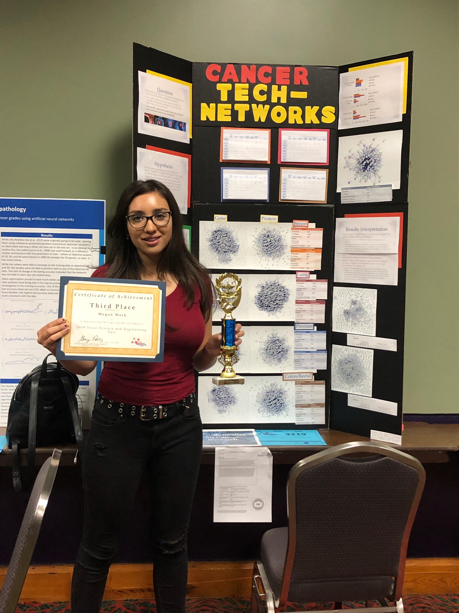

Cancer Tech-Networks
January 2017 - January 2020
The "Cancer Tech-networks" project explores how disruptions in normal cell cycles can lead to cancer, utilizing public gene expression data, bioinformatics tools, and computational techniques. By analyzing gene and protein networks from databases, the research identifies factors contributing to cancer and seeks to pinpoint specific behaviors in the most common cancers. The project also investigates potential new treatments for lung cancer, with a particular focus on the effects of curcumin, a natural compound, in combating cancer cell proliferation.
Cancer Tech-Networks
The goal of this project was to examine some of the factors responsible for disrupting normal cell cycles. Given the complexity of cancer and common misconceptions about biological processes, the project integrates bioinformatics tools and computational techniques to analyze public gene expression data from the NCBI database. In this project I learned to use DAVID and STRING to map interactions between genes involved in common cancers, such as breast, prostate, colon/rectal, and lung cancer. The project was an effort to use a network-based perspective on how mutations in genes and proteins can drive the development of cancer. The research also addresses the challenges of identifying which genes are most involved in cancer progression, by analyzing gene and protein networks. This project was my first introduction to Bioinformatics. I placed 3rd in the Texas State Science Fair for this project in 2018.
x Edgar Allen Poe Poetry Generator
August 2020 - May 2024
The Edgar Allan Poe-try Generator is a project that applies generative modeling techniques to create poems in the style of Edgar Allan Poe. It uses a fine-tuned GPT-2 language model to generate poetry based on a corpus of Edgar Allan Poe’s works, focusing on structured prediction learning. The goal was to replicate and expand upon a prior research paper to produce coherent, creative poems in the iconic style of Poe.
Edgar Allen Poe Poetry Generator
This project leverages modern generative modeling to create poems in the distinct style of Edgar Allan Poe. Drawing inspiration from the "GPoeT-2: A GPT-2 Based Poem Generator" research paper, the project used a pre-trained GPT-2 model and customized it with additional layers to generate poetry in the specific language and thematic style of Edgar Allan Poe. The dataset for training the model was a collection of Edgar Allan Poe’s poetic works, differing from the original paper's use of limericks. We struggled due to computation limitations of fine-tuning a large pre-trained model. We had redesign parts of the model, especially in the generation process. Although the model was able to generate some poetic outputs, it struggled to maintain consistent coherence and quality, often producing repetitive or disjointed text. Despite these challenges, the project met its baseline goal of producing outputs better than random generation, though it fell short of consistently creating coherent poems with a recognizable rhyme scheme.
xAffirmative Action Study
This project investigates how affirmative action policies impact racial demographics in higher education utilizing data from the U.S. Department of Education, focusing on enrollment statistics from 1980 to 2021. Conclusions were made using hypothesis testing and machine learning models like KNN and Logistic Regression to explore correlations between race-conscious admissions policies and student demographics at public universities.
Affirmative Action Study
The project utilized a rich dataset spanning over 40 years, sourced from the Integrated Postsecondary Education Data System (IPEDS), to investigate the racial and ethnic demographics of students enrolled in U.S. public universities. The data spans from 1980 to 2021 and includes over 3.5 million rows from institutions across the nation. This dataset, stored in the file "ipeds_joined.db", contains 20 demographic columns detailing the enrollment by race, ethnicity, and other attributes. IPEDS data is curated and managed by the National Center for Education Statistics (NCES), a part of the U.S. Department of Education, and is considered a highly reputable and authoritative source of information on higher education. The dataset had to be meticulously cleaned and standardized, especially considering the challenges that arose from inconsistent labeling and category changes over the years. For example, categories for race and ethnicity were not always uniform across years, with certain groups being combined or split over time. To address these discrepancies, I manually standardized the labels across all years, ensuring consistent categorization. The cleaning process also involved handling duplicates resulting from multiple surveys within the same year for the same institution. This was handled by performing aggregation queries, summing demographic data for each institution per year. Given the political significance of affirmative action, the project aimed to examine how these policies have affected the racial composition of students at public universities in states where affirmative action was banned compared to states that still used it prior to its repeal. Conclusions were made using hypothesis testing and machine learning models like KNN and Logistic Regression to explore correlations between race-conscious admissions policies and student demographics at public universities. This project could be examined to include more recent developments since June 2023. However, data on this is still being collected.
 x
x
Ratty Match: Meal Rating Website and App
short desc
Ratty Match: Meal Rating Website and App
hello my name is megan
xUndergraduate Thesis: "Border Surveillance and Migrant Detection"
short desc
Border Surveillance and Migrant Detection
hello my name is megan
xCOVID-19 Machine Learning Research: UTRA fellowship
short desc
COVID-19 Machine Learning Research
hello my name is megan
xThe Conversation Fellowship, "Strangers in the System: Legality and Labor in Immigrant Experiences"
This project was part of a fellowship with the University of New Mexico School of Law and Tougaloo College. The project explores the intersection of race, immigration status, and labor by investigating how legal classifications of immigrants as "legal" or "illegal" and how this affects their social and economic positioning. It looks at how these labels influence immigrant experiences within the workforce, their social mobility, and how these classifications shape their perceived productivity and worth.
Strangers in the System: Legality and Labor in Immigrant Experiences
Strangers in the System critically examines the racialized dynamics of immigration, focusing on the intersections of legal status and class in shaping immigrant experiences. The project investigates how the categorization of individuals as "legal" or "illegal" immigrants plays a pivotal role in framing societal perceptions of race, labor, and productivity. By analyzing both legal discourse and everyday language, the research highlights the role of racialized narratives in shaping the social, economic, and political outcomes of immigrants, with a particular focus on their access to labor markets, economic stability, and social rights. This project offers a deeper understanding of how legal and racial boundaries contribute to the marginalization and exploitation of immigrant populations, shedding light on the complex ways that class, productivity, and language intersect to define who belongs and who does not in society.
xWhimsi GrownYoung
short desc
Whimsi GrownYoung
This project reimagines the classic children's book format to explore adult challenges like workplace anxiety, imposter syndrome, burnout, friendships, and modern dating. Each book blends playful storytelling with real-world struggles—turning the chaos of adulthood into digestible, illustrated narratives. The project uses AI-generated illustrations and a collaboratively written narrative shaped by idea submissions from students on campus, the series creates a unique, engaging way to reflect on life’s messier moments with humor and honesty.
xRestaurant Operations Simulation
Designed and implemented a simulation model of a sit-down restaurant to analyze operational efficiency. The model integrates customer flow, table management, and a priority driven kitchen queue to optimize service time and maximize customer satisfaction. The project explores the impact of restaurant layout, staffing, and kitchen processes on business performance by simulating real-world constraints and operational bottlenecks.
Restaurant Operations Simulation
This project models the complex flow of a sit-down restaurant, simulating customer seating, order processing, and kitchen queue management. The goal of this project was to optimize restaurant operations by analyzing factors such as table assignment, order prioritization, and staff efficiency. The model simulated a typical customer experience from arrival to order fulfillment as well as a back of house model dictates staff allocation and a priority queue for the kitchen. This model was created using the programming language Forge. Making good abstraction choices to balance efficiency while still feeling realistic. Forge (like Alloy) doesn’t have a native queue data structure or explicit time progression, so we need to simulate priority order using relations and constraints. Since Forge lacks traditional looping constructs, we can model a priority queue in a relational and staged manner, leveraging ordering constraints by assigning each dish a priority value. These dishes were inserted into the queue using a doubly linked list. Since Forge is relation-based rather than imperative, the linked lists model used binary relations instead of pointers. Each customer was seated based on party size and table availability (no wait time estimates were modeled). Each order was randomized based on a simple menu with four dishes. Unfortunately the model was not able to simulate sequential cooking. Since Forge doesn’t have traditional multithreading or explicit concurrency control, the model did not simulate sequential cooking. In the future this could be handled by assigning a dish to one station at a time where multiple stations allow for simultaneous cooking. The biggest challenge in this model was accurately tracking orders to the right customers and tables once they entered the kitchen, especially with the stage-by-stage setup and the constant turnover of tables. Instead of continuous time, the sequence of discrete stages were used to represent key events in the restaurant flow.
xAPI Bias & Consistency Analysis
This project analyzed the consistency and potential biases of two candidate evaluation APIs. It examined factors such as resume scores, demographic attributes, and how different datasets influenced evaluation results through a series of controlled tests. The project used statistical and regression analyses, aiming to highlight potential disparities in automated hiring tools.
API Bias & Consistency Analysis
This project examines the consistency and potential biases in two resume evaluation APIs: Resume Scorer and Candidate Evaluator. By running controlled experiments with structured datasets, the analyses investigate how different candidate attributes—such as gender, ethnicity, disability, veteran status, and work authorization—impact API scoring. Some of the key tests included evaluating API stability by repeatedly submitting the same resumes, analyzing score variations across different candidate profiles, testing for biases by systematically altering protected attributes and applying regression models and decision trees to identify influential factors in scoring.
x